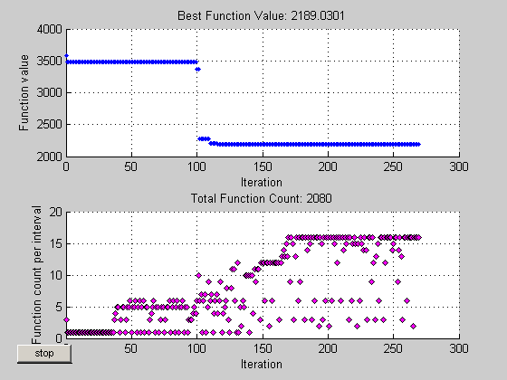
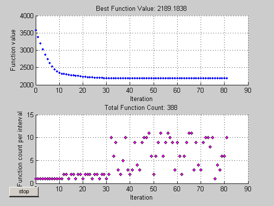

This is a demonstration of how to create and manage options for pattern search using the PSOPTIMSET function in the Genetic Algorithm and Direct Search Toolbox.
PATTERNSEARCH finds a linearly constrained minimum of a function. PATTERNSEARCH solves problems of the form:
min F(x) subject to: A*x <= B
x Aeq*x = Beq
LB <= x <= UBIn this demo, the PATTERNSEARCH solver is used to optimize an objective function subject to some linear equality and inequality constraints.
The pattern search solver takes at least two input arguments, namely the objective function and a start point. We will use the objective function LINCONTEST7 which is in the M-file 'lincontest7.m'. We pass a function handle to LINCONTEST7 as the first argument. The second argument is a starting point. Since LINCONTEST7 is a function of six variables, our start point must be of length six.
X0 = [2 1 0 9 1 0]; objectiveFcn = @lincontest7;
We also create the constraint matrices for the problem.
Aineq = [-8 7 3 -4 9 0 ]; Bineq = [7]; Aeq = [7 1 8 3 3 3; 5 0 5 1 5 8; 2 6 7 1 1 8; 1 0 0 0 0 0]; Beq = [84 62 65 1];
Next we run the PATTERNSEARCH solver.
[X1,Fval,Exitflag,Output] = patternsearch(objectiveFcn,X0,Aineq,Bineq,Aeq,Beq); fprintf('The number of iterations was : %d\n', Output.iterations); fprintf('The number of function evaluations was : %d\n', Output.funccount); fprintf('The best function value found was : %g\n', Fval);
Optimization terminated: current mesh size 9.5367e-007 is less than 'TolMesh'. The number of iterations was : 256 The number of function evaluations was : 1852 The best function value found was : 2189.03
If you are interested in visualizing the performance of the solver at run time you can use the provided plot functions or create your own. PATTERNSEARCH can accept one or more plot functions. Plot functions can be selected using the function PSOPTIMSET. The default is that no plot functions are called while PATTERNSEARCH is running. Here we create an options structure using PSOPTIMSET that selects two plot functions. The first plot function PSPLOTBESTF plots the best objective function value at every iterations, and the second plot function PSPLOTFUNCOUNT plots the number of times the objective function is evaluated at each iteration.
opts = psoptimset('PlotFcns',{@psplotbestf,@psplotfuncount});
We run the PATTERNSEARCH solver. Since we do not have upper or lower bound constraints, we pass empty arrays ([]) for the seventh and eighth arguments.
[X1,Fval,ExitFlag,Output] = patternsearch(objectiveFcn,X0,Aineq,Bineq, ...
Aeq,Beq,[],[],opts);
Optimization terminated: current mesh size 9.5367e-007 is less than 'TolMesh'.
Initial mesh size
The pattern search algorithm uses a set of rational basis vectors to generate search directions. It performs a search along the search directions using the current mesh size. The solver starts with an initial mesh size of one by default. To start the initial mesh size at 10, we can use PSOPTIMSET:
options = psoptimset('InitialMeshSize',10);
Mesh scaling
A mesh can be scaled to improve the minimization of a badly scaled optimization problem. Scale is used to rotate the pattern by some degree and scale along the search directions. The scale option is 'on' by default but can be turned off if the problem is well scaled. In general, if the problem is badly scaled, setting this option to 'on' may help in reducing the number of function evaluations. For our objective function, we can set scale to 'off' because it is known to be a well scaled problem.
opts = psoptimset('ScaleMesh','off');
Mesh accelerator
Direct search methods require many function evaluations as compared to derivative-based optimization methods. The pattern search algorithm can quickly find the neighborhood of an optimum point, but may be slow in detecting the minimum itself. This is the cost of not using derivatives. The PATTERNSEARCH solver can reduce the number of function evaluations using an accelerator. When the accelerator is 'on' the mesh size is contracted rapidly after some minimum mesh size is reached. This option is recommended only for smooth problems, otherwise you may lose some accuracy. The accelerator is 'off' by default. Here we set the accelerator 'on' because we know that our objective function is smooth.
Set mesh accelerator to 'on' and set mesh scale to 'off'.
opts = psoptimset('MeshAccelerator','on','ScaleMesh','off');
Run the PATTERNSEARCH solver.
[X2,Fval,ExitFlag,Output] = patternsearch(objectiveFcn,X0,Aineq,Bineq, ... Aeq,Beq,[],[],opts); fprintf('The number of iterations was : %d\n', Output.iterations); fprintf('The number of function evaluations was : %d\n', Output.funccount); fprintf('The best function value found was : %g\n', Fval);
Optimization terminated: current mesh size 3.0518e-007 is less than 'TolMesh'. The number of iterations was : 222 The number of function evaluations was : 1380 The best function value found was : 2189.03
Setting the accelerator to 'on' reduced the number of function evaluations.
What is TolMesh, TolX and TolFun
'TolMesh' is a tolerance on the mesh size. If the mesh size is less than 'TolMesh', the solver will stop. 'TolX' is used as the minimum tolerance on the change in the current point to the next point. 'TolFun' is used as the minimum tolerance on the change in the function value from the current point to the next point.
We can create an options structure that sets 'TolX' to 1e-7 using PSOPTIMSET. We can update our previously created options structure 'opts' by passing 'opts' to PSOPTIMSET.
opts = psoptimset(opts,'TolX',1e-7);
What is TolBind
When the current point is near enough to a constraint, the search directions must include the constraint boundary, that is, one of the search directions must be the constraint boundary. If the distance from the current point to a constraint is less than 'TolBind', the constraint is said to be active with respect to the current point; the the active constraint's boundary, or tangent, is included in the search directions. A larger tolerance value for 'TolBind' say equal to one, will possibly include more constraint boundaries, which may slow down the solver. On the other hand, a tight tolerance could reduce the number of search directions, and then speed up the solver.
The recommended value of 'TolBind' is a value greater than or equal to the maximum of 'TolMesh', 'TolX', and 'TolFun'. The default value of 'TolBind' is 1e-3. A tighter value, still greater than or equal to 'TolMesh', 'TolX', and 'TolFun', can be used for our example. We can update our options structure 'opts' to set the 'TolBind' to be 1e-6.
opts = psoptimset(opts,'TolBind',1e-6);
Run the PATTERNSEARCH solver.
[X3,Fval,ExitFlag,Output] = patternsearch(objectiveFcn,X0,Aineq,Bineq, ... Aeq,Beq,[],[],opts); fprintf('The number of iterations was : %d\n', Output.iterations); fprintf('The number of function evaluations was : %d\n', Output.funccount); fprintf('The best function value found was : %g\n', Fval);
Optimization terminated: current mesh size 7.6294e-008 is less than 'TolMesh'. The number of iterations was : 142 The number of function evaluations was : 806 The best function value found was : 2189.18
Decreasing 'TolBind' reduced the number of function evaluations.
Because the pattern search algorithm uses a pattern it is likely that a point is included in the pattern on more than one iteration. When the objective function is very expensive to evaluate, it can be more efficient to use the 'Cache' option, which is 'off' by default. If a new point is found in the cache, its objective function value does not need to be computed. This option should only be used with deterministic, not stochastic, objective functions.
The 'CacheTol' option is used to compare the current point with all the points in the cache. A recommended strategy is to use the default value for 'CacheTol' (which is eps). If the problem is smooth then we may increase 'CacheTol' to the order of 1e-10. 'CacheSize' is used to specify how many points will be stored before clearing half the cache. We can update our options structure to use the cache with a 'CacheTol' of 1e-10.
opts = psoptimset(opts,'Cache','on','CacheTol',1e-10);
Run the PATTERNSEARCH solver.
[X5,Fval,ExitFlag,Output] = patternsearch(objectiveFcn,X0,Aineq,Bineq,Aeq,Beq,[],[],opts); fprintf('The number of iterations was : %d\n', Output.iterations); fprintf('The number of function evaluations was : %d\n', Output.funccount); fprintf('The best function value found was : %g\n', Fval);
Optimization terminated: current mesh size 1.5259e-007 is less than 'TolMesh'. The number of iterations was : 73 The number of function evaluations was : 480 The best function value found was : 2189.18
Setting the cache to 'on' reduced the number of function evaluations.
The pattern search algorithm can use an additional search at every iteration. This option is called the 'SearchMethod'. When a 'SearchMethod' is provided, that search is done first before the mesh search. If the 'SearchMethod' is successful, the mesh search, commonly called the 'PollMethod' is skipped. If the search method is unsuccessful in improving the current point, the poll method is performed.
The toolbox provides five different search methods. These search methods include SEARCHGA and SEARCHNELDERMEAD, which are two different optimization algorithms. It is recommended to use these methods only for the first iteration, which is the default. Using these methods repeatedly at every iteration might not improve the results and could be computationally expensive. One the other hand, the SEARCHLHS, which generates latin hypercube points, can be used in every iteration or possibly every 10 iterations. Other choices for search methods include Poll methods such as positive basis N+1 or positive basis 2N.
A recommended strategy is to use the positive basis N+1 (which requires at most N+1 points to create a pattern) as a search method and positive basis 2N (which requires 2N points to create a pattern) as a poll method. We update our options structure to use @positivebasisnp1 as the search method. Since the positive basis 2N is the default 'PollMethod', we do not need to set that option. Additionally we can select the plot functions we used in first part of this demo to compare the performance of the solver.
opts = psoptimset(opts,'SearchMethod',@positivebasisnp1, ... 'PlotFcns',{@psplotbestf, @psplotfuncount});
Run the PATTERNSEARCH solver.
[X5,Fval,ExitFlag,Output] = patternsearch(objectiveFcn,X0,Aineq,Bineq,Aeq,Beq,[],[],opts); fprintf('The number of iterations was : %d\n', Output.iterations); fprintf('The number of function evaluations was : %d\n', Output.funccount); fprintf('The best function value found was : %g\n', Fval);
Optimization terminated: current mesh size 1.9073e-008 is less than 'TolMesh'. The number of iterations was : 82 The number of function evaluations was : 388 The best function value found was : 2189.18
With the above settings of options, the total number of function evaluations decreased.